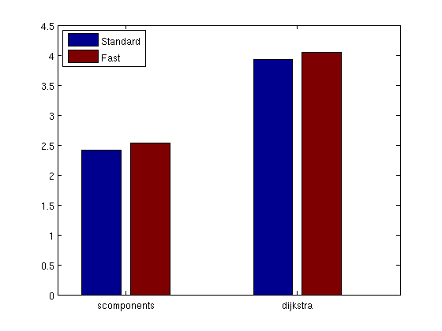

<!DOCTYPE html
  PUBLIC "-//W3C//DTD XHTML 1.0 Strict//EN">
<html xmlns:mwsh="http://www.mathworks.com/namespace/mcode/v1/syntaxhighlight.dtd">
   <head>
      <meta http-equiv="Content-Type" content="text/html; charset=utf-8">
   
      <!--
This HTML is auto-generated from an M-file.
To make changes, update the M-file and republish this document.
      -->
      <title>Compare performance of gaimc to matlab_bgl</title>
      <meta name="generator" content="MATLAB 7.5">
      <meta name="date" content="2009-05-16">
      <meta name="m-file" content="performance_comparison_simple"><style>

body {
  background-color: white;
  margin:10px;
}

h1 {
  color: #990000; 
  font-size: x-large;
}

h2 {
  color: #990000;
  font-size: medium;
}

/* Make the text shrink to fit narrow windows, but not stretch too far in 
wide windows. */ 
p,h1,h2,div.content div {
  max-width: 600px;
  /* Hack for IE6 */
  width: auto !important; width: 600px;
}

pre.codeinput {
  background: #EEEEEE;
  padding: 10px;
}
@media print {
  pre.codeinput {word-wrap:break-word; width:100%;}
} 

span.keyword {color: #0000FF}
span.comment {color: #228B22}
span.string {color: #A020F0}
span.untermstring {color: #B20000}
span.syscmd {color: #B28C00}

pre.codeoutput {
  color: #666666;
  padding: 10px;
}

pre.error {
  color: red;
}

p.footer {
  text-align: right;
  font-size: xx-small;
  font-weight: lighter;
  font-style: italic;
  color: gray;
}

  </style></head>
   <body>
      <div class="content">
         <h1>Compare performance of gaimc to matlab_bgl</h1>
         <introduction>
            <p>While the <tt>gaimc</tt> library implements its graph routines in Matlab "m"-code, the <tt>matlab_bgl</tt> library uses graph algorithms from the Boost graph library in C++ through a mex interface.  Folklore has it that Matlab code
               with for loops like those required in the <tt>gaimc</tt> library is considerably slower.  This example examines this lore and shows that <tt>gaimc</tt> is typically within a factor of 2-4 of the mex code for one function.  The full performance_comparison suite evaluates the
               rest, but it takes a while to run, so I only run it when I'm interested in a complete picture and can afford to run it overnight.
            </p>
         </introduction>
         <h2>Contents</h2>
         <div>
            <ul>
               <li><a href="#2">Setup the environment</a></li>
               <li><a href="#5">Connected components</a></li>
               <li><a href="#6">Dijkstra's algorithm</a></li>
               <li><a href="#7">Summarize the results</a></li>
            </ul>
         </div>
         <p><b>This demo is unlikely to work on your own computer.</b> <b>They depend on having the MatlabBGL routines in one spot.</b></p>
         <h2>Setup the environment<a name="2"></a></h2>
         <p>We need MatlabBGL on the path</p><pre class="codeinput">graphdir = <span class="string">'../graphs/'</span>;
matlabbgldir = <span class="string">'~/dev/matlab-bgl/4.0'</span>;
<span class="keyword">try</span>
    addpath(matlabbgldir); <span class="comment">% change this to your matlab_bgl path</span>
    ci=components(sparse(ones(5)));
<span class="keyword">catch</span>
    error(<span class="string">'gaimc:performance_comparison'</span>,<span class="string">'Matlab BGL is not working, halting...'</span>);
<span class="keyword">end</span>
</pre><pre class="codeoutput">Warning: Duplicate directory name: /home/dgleich/dev/matlab-bgl/4.0.
</pre><p>Check to make sure we are in the correct directory</p><pre class="codeinput">cwd = pwd; dirtail = [<span class="string">'gaimc'</span> filesep <span class="string">'demo'</span>];
<span class="keyword">if</span> strcmp(cwd(end-length(dirtail)+1:end),dirtail) == 0
    error(<span class="string">'%s should be executed from %s\n'</span>,mfilename,dirtail);
<span class="keyword">end</span>
</pre><p>initalize the results structure</p><pre class="codeinput">results=[];
mex_fast=0; mat_fast=0; mex_std=0; mat_std=0;
</pre><h2>Connected components<a name="5"></a></h2>
         <p>To evaluate the performance of the connected components algorithm, we use sets of random graphs.</p><pre class="codeinput">nrep=30;
szs=[1 10 100 5000 10000 50000];
comp_results=[mex_fast mat_fast mex_std mat_std];
<span class="keyword">for</span> szi=1:length(szs)
    fprintf(<span class="string">'\n%20s size=%-5i     '</span>, <span class="string">'scomponents'</span>, szs(szi));
    <span class="comment">% Matlab needs 1 iteration to compile the function</span>
    <span class="keyword">if</span> szi==2, mex_fast=0; mat_fast=0; mex_std=0; mat_std=0; <span class="keyword">end</span>
    <span class="keyword">for</span> rep=1:nrep
        fprintf(<span class="string">'\b\b\b\b'</span>); fprintf(<span class="string">' %3i'</span>, rep);
        A=sprand(szs(szi),szs(szi),25/szs(szi));
        At=A'; [rp ci ai]=sparse_to_csr(A); As.rp=rp; As.ci=ci; As.ai=ai;
        tic; cc1=components(A); mex_std=mex_std+toc;
        tic; cc2=components(At,struct(<span class="string">'istrans'</span>,1,<span class="string">'nocheck'</span>,1));
            mex_fast=mex_fast+toc;
        tic; cc3=scomponents(A); mat_std=mat_std+toc;
        tic; cc4=scomponents(As); mat_fast=mat_fast+toc;
        cs1=accumarray(cc1,1,[max(cc1) 1]);
        cs2=accumarray(cc2,1,[max(cc2) 1]);
        cs3=accumarray(cc3,1,[max(cc3) 1]);
        cs4=accumarray(cc4,1,[max(cc4) 1]);
        <span class="keyword">if</span> any(cs1 ~= cs2) || any(cs2 ~= cs3) || any(cs2 ~= cs4)
            error(<span class="string">'gaimc:scomponents'</span>,<span class="string">'incorrect results from scomponents'</span>);
        <span class="keyword">end</span>
    <span class="keyword">end</span>
    comp_results(end+1,:) = [mex_fast mat_fast mex_std mat_std];
<span class="keyword">end</span>
comp_results=diff(comp_results);
results(end+1).name=<span class="string">'scomponents'</span>;
results(end).mex_fast = mex_fast;
results(end).mat_fast = mat_fast;
results(end).mex_std = mex_std;
results(end).mat_std = mat_std;
</pre><pre class="codeoutput">
         scomponents size=1       30
         scomponents size=10      30
         scomponents size=100     30
         scomponents size=5000    30
         scomponents size=10000   30
         scomponents size=50000   30</pre><h2>Dijkstra's algorithm<a name="6"></a></h2>
         <p>To evaluate the performance of Dijkstra's algorithm, we pick</p><pre class="codeinput">graphs = {<span class="string">'clr-25-2'</span>, <span class="string">'clr-24-1'</span>, <span class="string">'cs-stanford'</span>, <span class="keyword">...</span>
    <span class="string">'minnesota'</span>, <span class="string">'tapir'</span>};
nrep=30; ntests=100; mex_fast=0; mat_fast=0; mex_std=0; mat_std=0;
<span class="keyword">for</span> rep=1:nrep
    <span class="keyword">for</span> gi=1:length(graphs)
        load([graphdir graphs{gi} <span class="string">'.mat'</span>]); n=size(A,1);
        At=A'; [rp ci ai]=sparse_to_csr(A); As.rp=rp; As.ci=ci; As.ai=ai;
        <span class="keyword">for</span> ti=1:ntests
            fprintf([repmat(<span class="string">'\b'</span>,1,66) <span class="string">'%20s rep=%3i graph=%-20s trial=%4i'</span>], <span class="keyword">...</span>
                <span class="string">'dijkstra'</span>,rep,graphs{gi},ti);
            v=ceil(n*rand(1));
            tic; d1=dijkstra_sp(A,v); mex_std=mex_std+toc;
            tic; d2=dijkstra_sp(At,v,struct(<span class="string">'istrans'</span>,1,<span class="string">'nocheck'</span>,1));
              mex_fast=mex_fast+toc;
            tic; d3=dijkstra(A,v); mat_std=mat_std+toc;
            tic; d4=dijkstra(As,v); mat_fast=mat_fast+toc;
            <span class="keyword">if</span> any(d1 ~= d2) || any(d2 ~= d3) || any(d3 ~= d4)
                error(<span class="string">'gaimc:dijkstra'</span>,<span class="string">'incorrect results from dijkstra'</span>);
            <span class="keyword">end</span>
        <span class="keyword">end</span>
    <span class="keyword">end</span>
<span class="keyword">end</span>
fprintf(<span class="string">'\n'</span>);
results(end+1).name=<span class="string">'dijkstra'</span>;
results(end).mex_fast = mex_fast;
results(end).mat_fast = mat_fast;
results(end).mex_std = mex_std;
results(end).mat_std = mat_std;
</pre><pre class="codeoutput">            dijkstra rep= 30 graph=tapir                trial= 100
</pre><h2>Summarize the results<a name="7"></a></h2>
         <p>We are going to summarize the results in a bar plot based on the algorithm.  Each algorithm is a single bar where the performance
            of the mex code is 1.
         </p><pre class="codeinput">nresults=length(results);
Ystd = zeros(nresults,1);
Yfast = zeros(nresults,1);
<span class="keyword">for</span> i=1:nresults
    Ystd(i)=results(i).mat_std/results(i).mex_std;
    Yfast(i)=results(i).mat_fast/results(i).mex_fast;
<span class="keyword">end</span>
bar(1:nresults,[Ystd Yfast]); set(gca,<span class="string">'XTickLabel'</span>,{results.name});
legend(<span class="string">'Standard'</span>,<span class="string">'Fast'</span>,<span class="string">'Location'</span>,<span class="string">'Northwest'</span>);
</pre> <p>From this, we see that the connected component codes are about half the speed of the Matlab BGL functions and Dijkstra's is
            about 1/4th the speed.  This seems unideal, but the code is much more portable and flexible.
         </p>
         <p>The difference between the Standard and Fast results is that the fast results eliminate all data translation for both gaimc
            and MatlabBGL and are evaluating the actual algorithm implementation and not any of the data translation components.
         </p>
         <p class="footer"><br>
            Published with MATLAB&reg; 7.5<br></p>
      </div>
      <!--
##### SOURCE BEGIN #####
%% Compare performance of gaimc to matlab_bgl
% While the |gaimc| library implements its graph routines in Matlab
% "m"-code, the |matlab_bgl| library uses graph algorithms from the Boost
% graph library in C++ through a mex interface.  Folklore has it that
% Matlab code with for loops like those required in the |gaimc| library is
% considerably slower.  This example examines this lore and shows that
% |gaimc| is typically within a factor of 2-4 of the mex code for one
% function.  The full performance_comparison suite evaluates the rest, but
% it takes a while to run, so I only run it when I'm interested in a
% complete picture and can afford to run it overnight.

%%
% *This demo is unlikely to work on your own computer.*
% *They depend on having the MatlabBGL routines in one spot.*

%% Setup the environment
% We need MatlabBGL on the path
graphdir = '../graphs/';
matlabbgldir = '~/dev/matlab-bgl/4.0';
try
    addpath(matlabbgldir); % change this to your matlab_bgl path
    ci=components(sparse(ones(5)));
catch
    error('gaimc:performance_comparison','Matlab BGL is not working, halting...');
end

%%
% Check to make sure we are in the correct directory
cwd = pwd; dirtail = ['gaimc' filesep 'demo']; 
if strcmp(cwd(end-length(dirtail)+1:end),dirtail) == 0
    error('%s should be executed from %s\n',mfilename,dirtail);
end

%%
% initalize the results structure
results=[];
mex_fast=0; mat_fast=0; mex_std=0; mat_std=0;

%% Connected components
% To evaluate the performance of the connected components algorithm, we use
% sets of random graphs.
nrep=30; 
szs=[1 10 100 5000 10000 50000];
comp_results=[mex_fast mat_fast mex_std mat_std];
for szi=1:length(szs)
    fprintf('\n%20s size=%-5i     ', 'scomponents', szs(szi));
    % Matlab needs 1 iteration to compile the function
    if szi==2, mex_fast=0; mat_fast=0; mex_std=0; mat_std=0; end
    for rep=1:nrep
        fprintf('\b\b\b\b'); fprintf(' %3i', rep); 
        A=sprand(szs(szi),szs(szi),25/szs(szi));
        At=A'; [rp ci ai]=sparse_to_csr(A); As.rp=rp; As.ci=ci; As.ai=ai;
        tic; cc1=components(A); mex_std=mex_std+toc;
        tic; cc2=components(At,struct('istrans',1,'nocheck',1));
            mex_fast=mex_fast+toc;
        tic; cc3=scomponents(A); mat_std=mat_std+toc;
        tic; cc4=scomponents(As); mat_fast=mat_fast+toc;
        cs1=accumarray(cc1,1,[max(cc1) 1]);
        cs2=accumarray(cc2,1,[max(cc2) 1]);
        cs3=accumarray(cc3,1,[max(cc3) 1]);
        cs4=accumarray(cc4,1,[max(cc4) 1]);
        if any(cs1 ~= cs2) || any(cs2 ~= cs3) || any(cs2 ~= cs4)
            error('gaimc:scomponents','incorrect results from scomponents');
        end
    end
    comp_results(end+1,:) = [mex_fast mat_fast mex_std mat_std];
end
comp_results=diff(comp_results);
results(end+1).name='scomponents';
results(end).mex_fast = mex_fast;
results(end).mat_fast = mat_fast;
results(end).mex_std = mex_std;
results(end).mat_std = mat_std;

%% Dijkstra's algorithm
% To evaluate the performance of Dijkstra's algorithm, we pick 
graphs = {'clr-25-2', 'clr-24-1', 'cs-stanford', ...
    'minnesota', 'tapir'};
nrep=30; ntests=100; mex_fast=0; mat_fast=0; mex_std=0; mat_std=0;
for rep=1:nrep
    for gi=1:length(graphs)
        load([graphdir graphs{gi} '.mat']); n=size(A,1);
        At=A'; [rp ci ai]=sparse_to_csr(A); As.rp=rp; As.ci=ci; As.ai=ai;
        for ti=1:ntests
            fprintf([repmat('\b',1,66) '%20s rep=%3i graph=%-20s trial=%4i'], ...
                'dijkstra',rep,graphs{gi},ti);
            v=ceil(n*rand(1));
            tic; d1=dijkstra_sp(A,v); mex_std=mex_std+toc;
            tic; d2=dijkstra_sp(At,v,struct('istrans',1,'nocheck',1)); 
              mex_fast=mex_fast+toc;
            tic; d3=dijkstra(A,v); mat_std=mat_std+toc;
            tic; d4=dijkstra(As,v); mat_fast=mat_fast+toc;
            if any(d1 ~= d2) || any(d2 ~= d3) || any(d3 ~= d4)
                error('gaimc:dijkstra','incorrect results from dijkstra');
            end
        end
    end
end
fprintf('\n');
results(end+1).name='dijkstra';
results(end).mex_fast = mex_fast;
results(end).mat_fast = mat_fast;
results(end).mex_std = mex_std;
results(end).mat_std = mat_std;


%% Summarize the results
% We are going to summarize the results in a bar plot based on the
% algorithm.  Each algorithm is a single bar where the performance of the
% mex code is 1.  
nresults=length(results);
Ystd = zeros(nresults,1);
Yfast = zeros(nresults,1);
for i=1:nresults
    Ystd(i)=results(i).mat_std/results(i).mex_std;
    Yfast(i)=results(i).mat_fast/results(i).mex_fast;
end
bar(1:nresults,[Ystd Yfast]); set(gca,'XTickLabel',{results.name});
legend('Standard','Fast','Location','Northwest');

%%
% From this, we see that the connected component codes are about half the
% speed of the Matlab BGL functions and Dijkstra's is about 1/4th the
% speed.  This seems unideal, but the code is much more portable and
% flexible.
%
% The difference between the Standard and Fast results is that the fast
% results eliminate all data translation for both gaimc and MatlabBGL and
% are evaluating the actual algorithm implementation and not any of the
% data translation components.
    

##### SOURCE END #####
-->
   </body>
</html>